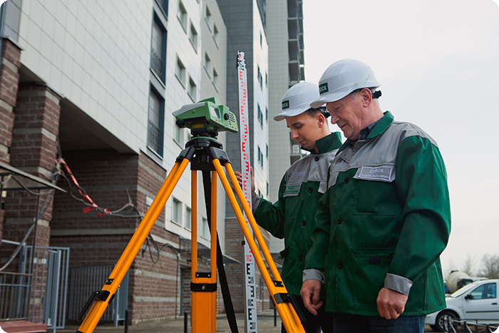

2019 год
ГЕОТЕХНИЧЕСКИЙ МОНИТОРИНГ ЗДАНИЙ И СООРУЖЕНИЙ

В полном комплексе геотехнического мониторинга можно выделить 6 этапов:
- Оценка геотехнической ситуации строительной площадки (геологических, гидрологических, экологических условий), изучение топографической карты района застройки, определение проходящих в зоне строительства коммуникаций;
- Изыскательские работы, в которые входят: инженерно-геологические изыскания; инженерно-геодезические изыскания; инженерно-геодезические изыскания; обследование технического состояния окружающей застройки, включая фундаменты зданий попадающих в тридцати метровую зону строительства; инженерно-экологические изыскания и т.д.;
- Разработка проекта производства геотехнического сопровождения строительства или специальный раздел в ППР;
- Натурные наблюдения и измерения в рамках проекта утверждённого для данного объекта, а также мониторинг прилегающей территории;
- При строительстве высотных зданий также предусмотрен мониторинг состояния в процессе строительства;
- Мониторинг технического состояния высотного здания или сооружения в процессе эксплуатации.
Для Санкт-Петербурга территориальными нормами ТСН 50-302-2004, выделяются мероприятия геотехнического мониторинга:
Подготовительный этап для 2 геотехнической категории:
- анализ результатов обследования зданий попадающих в тридцати метровую зону;
- анализ инженерно-геологических изысканий и обследований фундаментов, а также сведений о техническом состоянии подземных сооружений попадающих в тридцати метровую зону;
- определение фоновых параметров колебаний конструкций зданий от имеющихся воздействий (автомобильного транспорта, трамваев, метро, соседних производств и т.д.);
- установка маяков и датчиков раскрытия трещин;
- определение кренов наружных стен и неравномерности осадок зданий окружающей застройки;
- установка геодезических марок на цоколе и нивелировка высокоточным оборудованием с привязкой к городской реперной сети;
- выполнение циклов наблюдений с целью оценки стабилизации деформаций соседних зданий и сооружений;
- при производстве работ ниже уровня грунтовых вод, выполняются режимные скважины для контроля за уровнем подземных вод;
- уточнение допустимых воздействий на основании проекта.
Подготовительный этап для 3 геотехнической категории помимо вышеперечисленных мероприятий на основании ТСН 50-302-2004 в качестве рекомендации предусматривает установку контрольно-измерительной аппаратуры (грунтовые геодезические марки, марки для измерения послойных деформаций, инклинометры, датчики порового давления, мессдозы вертикальных и горизонтальных напряжений), которая позволяет выполнять:
- контроль горизонтальных смещений, осадок и кренов конструкций строящегося подземного сооружения, а также окружающей застройки попадающей в тридцати метровую зону;
- наблюдение за техническим состоянием конструкций строящегося подземного сооружения и окружающих зданий и сооружений;
- отслеживание деформации распорных и подпорных конструкций;
- определение значения усилий в анкерных конструкциях;
- отслеживание напряжения и деформации в грунтовом массиве;
- измерения пьезометрического напора воды в грунтовом массиве.
Нормативные сроки проведения:
Осуществляется по разделу проекта «Система мониторинга на площадке» или программе разработанной специализированной организацией.
Геодезический мониторинг деформаций зданий и сооружений попадающих в 30-ти метровую зону строительства:
- Нулевой цикл – 1 раз в неделю;
- Надземная часть – 1 раз в 2 недели;
- После завершения строительства – 1 раз в месяц;
- Далее – 1 раз в квартал.
Визуальный мониторинг, контроль маячков и датчиков на трещинах зданий и сооружений попадающих в 30-ти метровую зону строительства:
- Нулевой цикл – 1 раз в месяц;
- Надземная часть – 1 раз в месяц;
- После завершения строительства – 1 раз в квартал;
- Далее – 1 раз в год.
Также во время всего периода ведения работ проводится:
- мониторинг колебаний грунта и окружающей застройки;
- мониторинг состояния возведенных конструкций нулевого цикла;
- фиксацию показаний установленной аппаратуры при мониторинге третьей геотехнической категории.